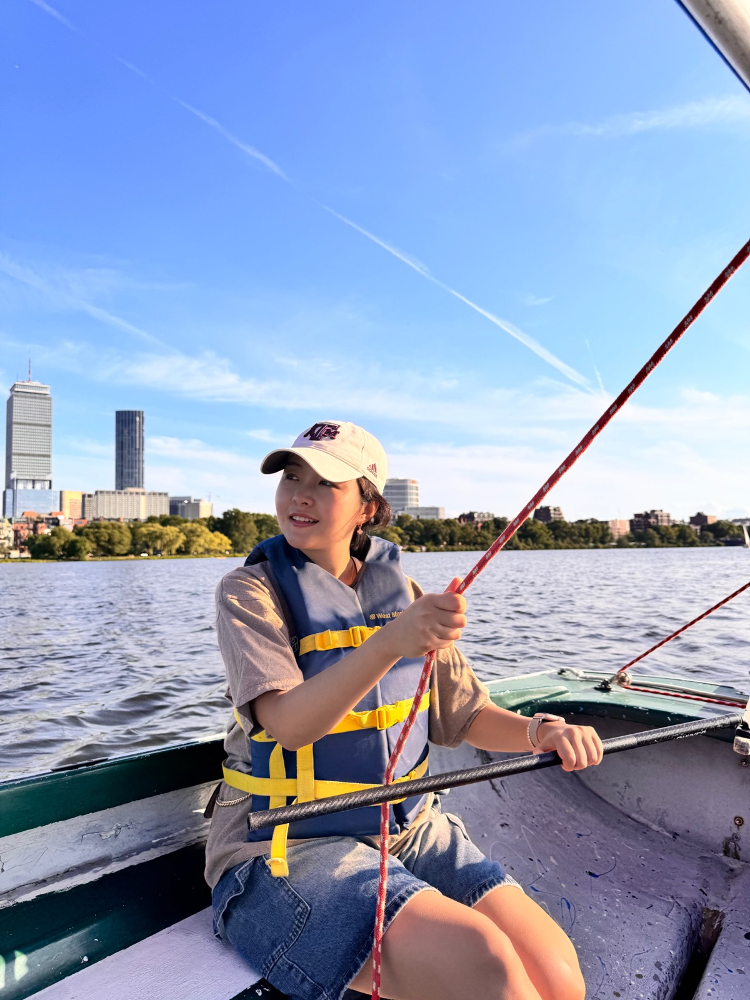
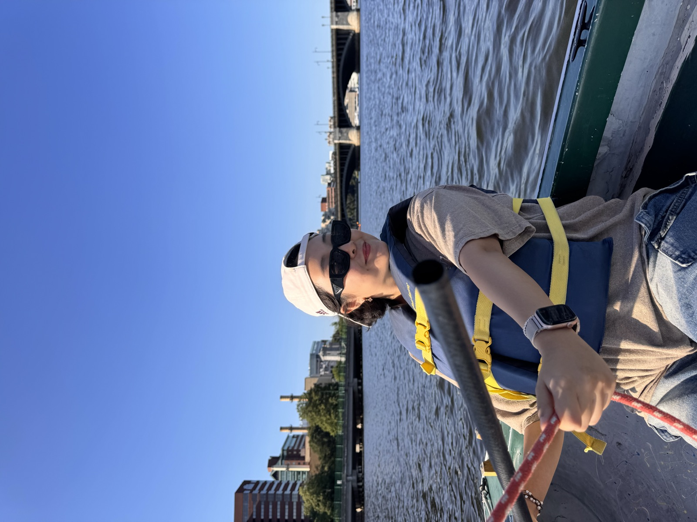
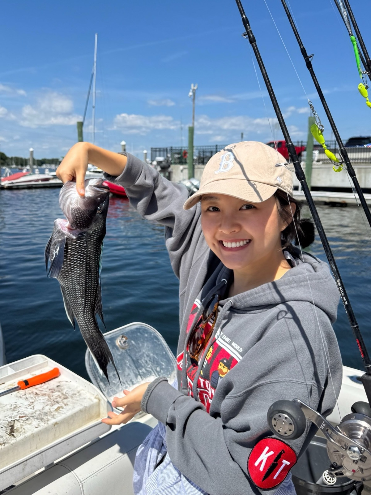
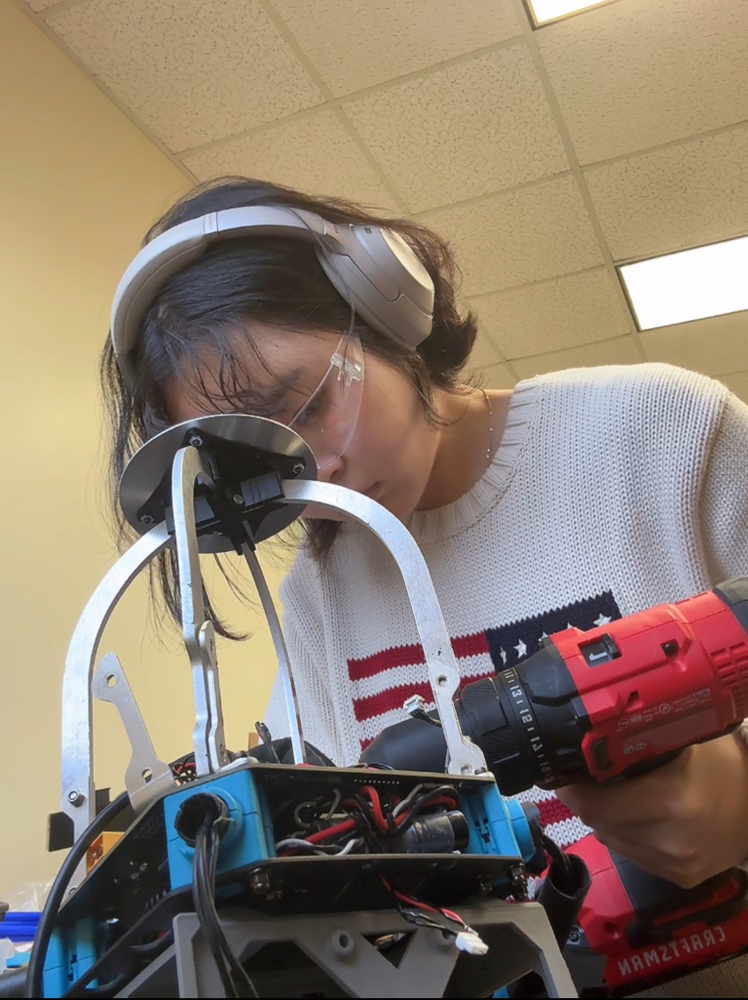
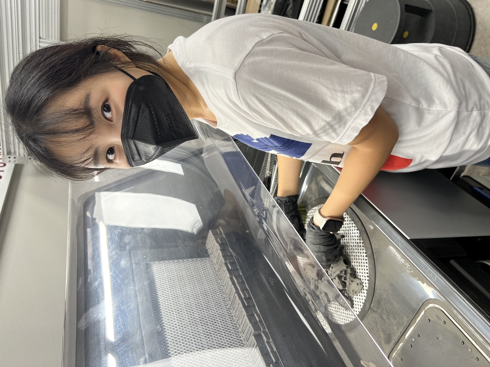
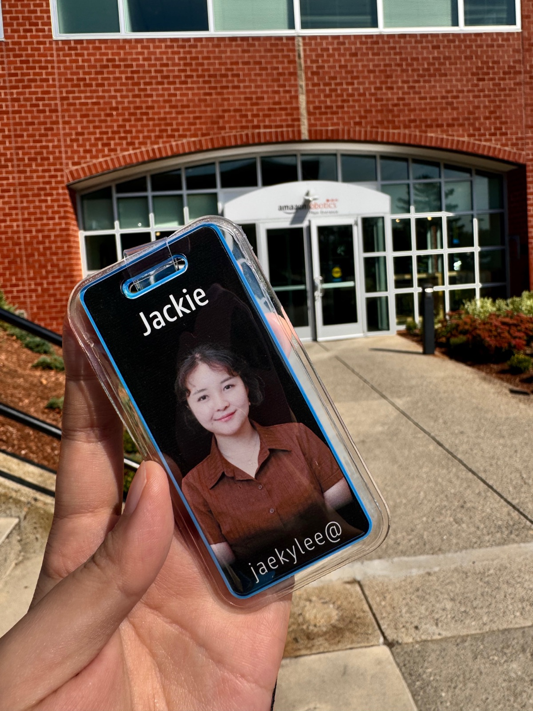
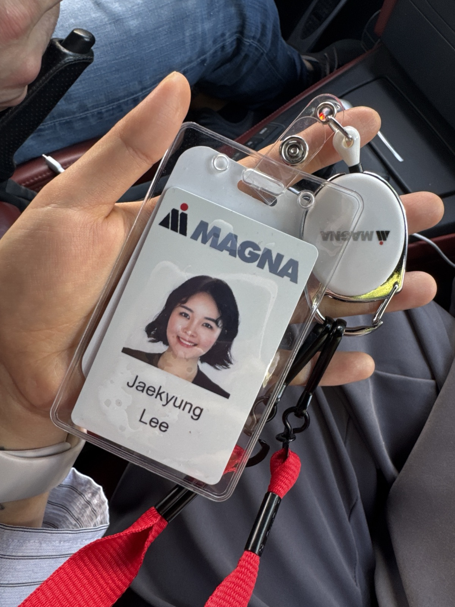
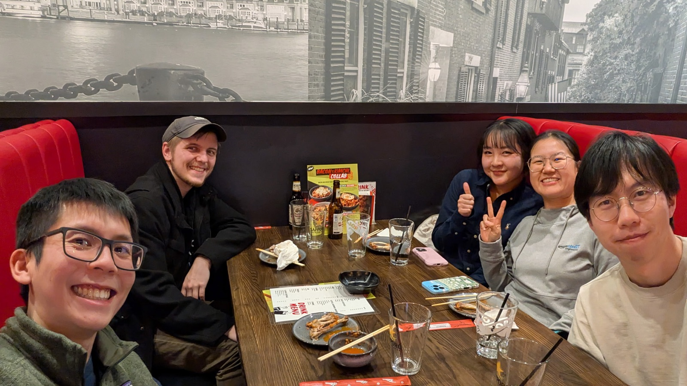
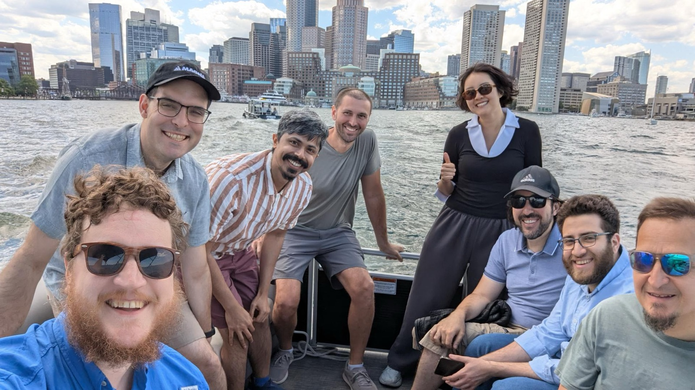
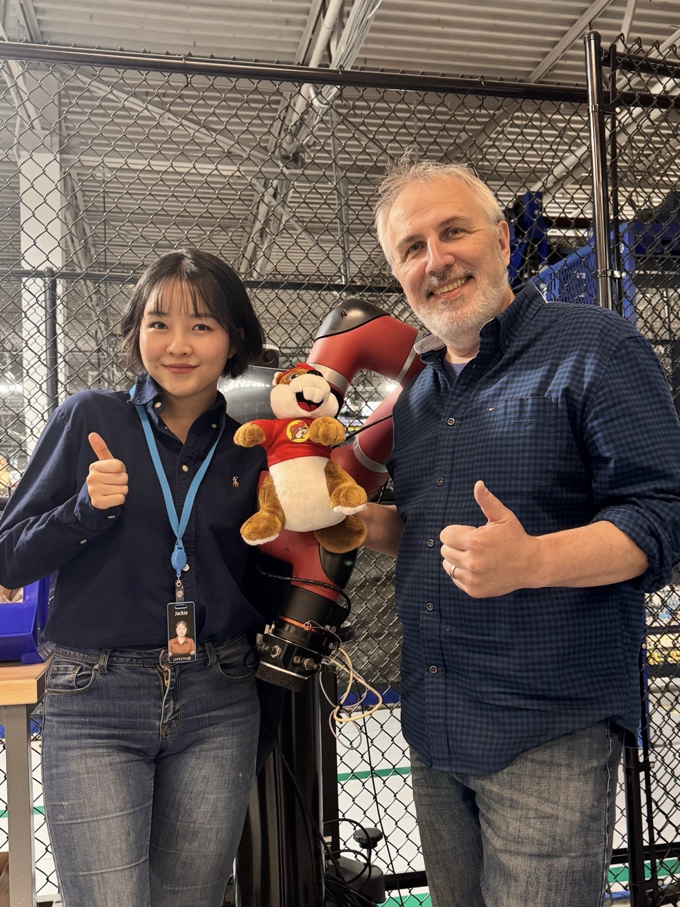

Life
Outside the lab
I like being on the water, catching my own dinner, and taking things apart to find out why they stopped working. This is the part of my life that does not fit on a CV.
On the water
I learned to sail on the Charles River during my summers in Boston. Wind is the one system I cannot tune with a controller, so I have to read it instead — which is exactly why I like it. A good afternoon is a steady breeze, the skyline on one side, and nothing to debug.


Fishing
Fishing off the New England coast is my favorite way to spend a day off. Wake up early, motor out, wait, hope. The waiting turns out to be very good for thinking through whatever I am stuck on.

Building and fixing
My hobby and my research share a workbench. I have been building drones since undergrad, so when something breaks I would rather open it up than wait for someone else to. Safety glasses, a drill, a good playlist.


Internship life
Two summers in Massachusetts: warehouse robots at Amazon Robotics in North Reading, then automated parking at Magna Electronics in Lowell. Different buildings, same first-day feeling — badge in hand, no idea where the coffee is.






Tennis
I joined the Korean-American tennis community in College Station as a complete beginner and kept going because everyone there was kinder than my backhand deserved.


Steel pan
I play with Maroon Steel, the Texas A&M steel pan band. I cannot read music quickly, so I learn by ear and by counting — somehow harder than any controls class I have taken.


Community and teaching
I served as president of the Texas A&M KSEA chapter and as national secretary for the 2025 US-Korea Conference. I also teach labs, which is where I learned that explaining something badly is the fastest way to discover I did not understand it.


Elsewhere
For the technical side, my research and notes are a better place to start. If you want to talk about boats, fish or drones, email me.